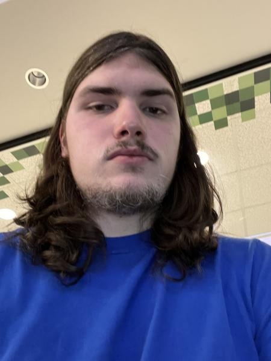

My name is Quaid Wilkins. I am 21 years old and I'm a student a Michigan States University. My major is Games and Interactive Media with a focus in game design. I have been practicing game design in and outside of classes for three years now. I even did my first ever Game Jam this year as a programmer for my team.
I also user to be a wrestler up until college.I wrestled since I was eight till I was eighteen. Besides that I have many things that I am interested in. Most of my favorite activities to do are considered nerdy to most people, but I still love to do them anyways. Here is a list of the activities I like to do the most.